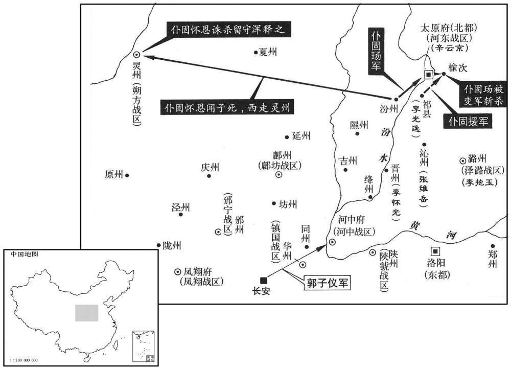
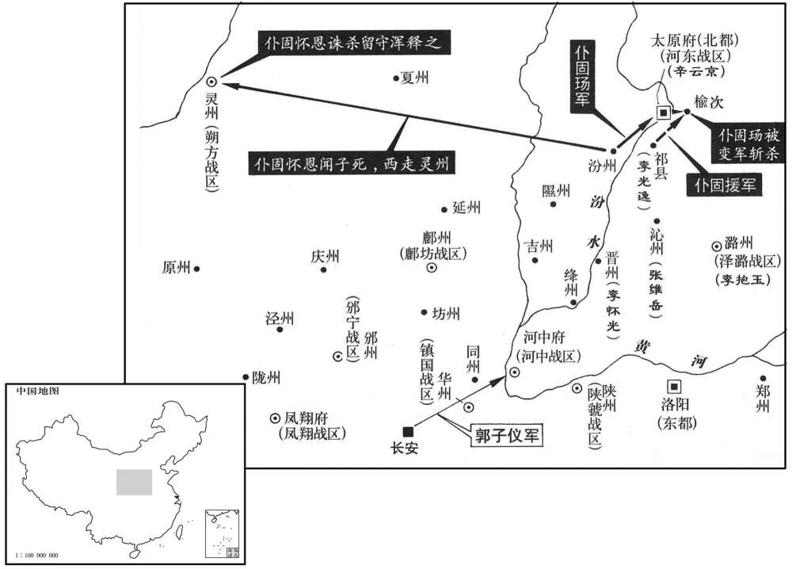
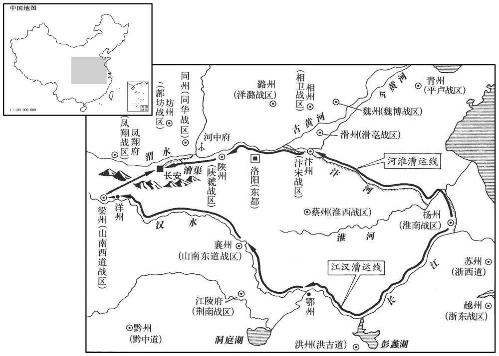
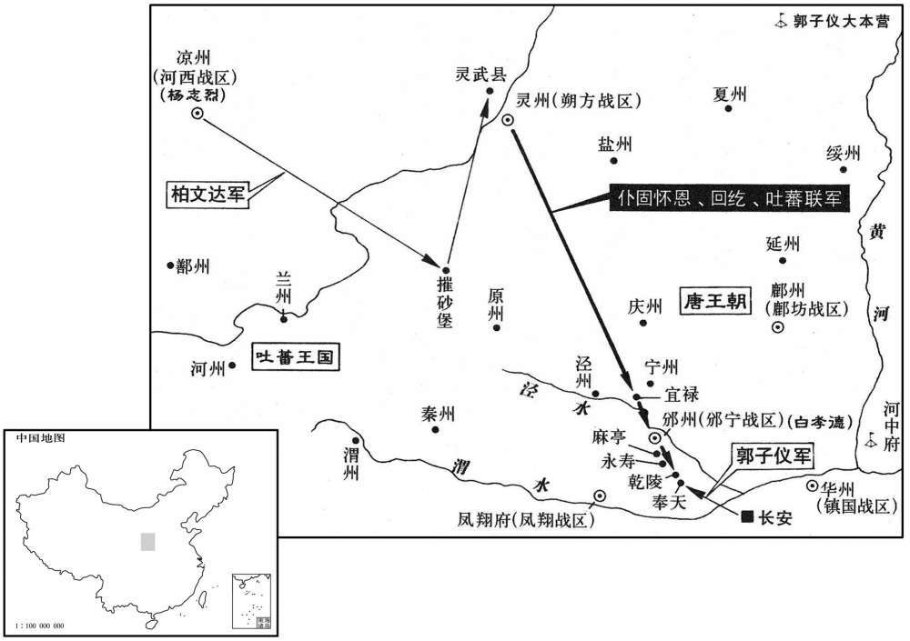

公元764年资治通鉴：本年记事、原文与白话对照
按原书编年位置阅读；追叙和史论不等于本年发生的事件。白话采用所据译本，缺译不以生成译文补齐。
卷223 · 本年记事
公元764年 · 唐代宗睿文孝武皇帝广德二年
二年〔（甲辰、七六四）〕
本年事件索引（现代整理）
- 程元振被长流溱州，后改安置江陵
- 代宗合并剑南东西川并任命严武为节度使
- 颜真卿奉命宣慰朔方，建议以郭子仪代仆固怀恩
- 杜鸿渐奏定天地祭祀配享人选
- 代宗立雍王李适为皇太子
- 薛景仙受命讨伐南山五谷盗贼
- 田承嗣所辖魏博军获名天雄军
- 辛云京击败仆固玚，郭子仪受命镇抚河东
- 刘晏、李岘罢相，王缙与杜鸿渐入相
- 代宗任郭子仪为朔方节度大使
- 代宗祭祀太清宫、太庙及圜丘
- 仆固玚攻榆次受挫，部下哗变杀玚，仆固怀恩北逃
- 仆固怀恩回灵州后杀浑释之并夺取其军
- 张维岳冒领杀仆固玚之功，代宗拒绝群臣庆贺
- 郭子仪接收仆固怀恩部众并处死作伪的卢谅
- 代宗厚待李光弼家属，李光弼仍避居徐州
- 代宗赦天下
- 刘晏疏浚汴水，恢复江淮漕运以供关中
- 盛王李琦去世
- 郭子仪遣李国臣诱敌出击，大破党项
- 唐朝开始施行五纪历
- 杨绾奏请废除孝弟力田与童子科
- 郭子仪奏请裁撤河中节度使及耀德军
- 仆固怀恩在灵武收合部众，拒绝代宗诏命
- 代宗征收天下青苗钱供给百官俸禄
- 李光弼病逝，王缙接任河南诸道行营统帅
- 郭子仪判断仆固怀恩无力叛乱，奉命赴奉天
- 代宗加授王缙东都留守
- 崔塁发河中镇兵御吐蕃引发兵变
- 代宗加授辛云京同平章事
- 代宗任郭子仪、李抱玉为南北道通和吐蕃使
- 严武击败吐蕃并攻取当狗城
- 关中蝗灾连绵阴雨，米价高涨
- 仆固怀恩引回纥、吐蕃逼近邠州
- 严武攻取吐蕃盐川城
- 郭子仪坚壁诱敌，击退仆固怀恩及吐蕃联军
- 杨志烈派柏文达袭击灵州，后遭仆固怀恩反击
- 段秀实整肃郭晞部曲，平息邠州军纪之乱
- 薛景仙讨伐南山群盗无功，李抱玉等将其平定
- 郭子仪辞让尚书令并返回河中镇守
- 户部奏报天下户口不足三百万户
- 于阗王胜请求留朝宿卫并将王位传给其弟

本年形势与背景参考图

本年形势与背景参考图

本年形势与背景参考图

本年形势与背景参考图
春，正月，壬寅，敕称程元振变服潜行，将图不轨，长流溱州。上念元振之功，〔复念其保护之功也。〕寻复令于江陵安置。〔复，扶又翻。溱，缁诜翻。溱州治荣懿县，贞观开山洞所置也。江陵府，上元置府，又置南都，则善地也。令，力丁翻。〕
本段缺少可靠对应白话，原文完整保留；未使用生成译文。
癸卯，合剑南东、西州为一道，以黄门侍郎严武为节度使。〔分剑南为东、西两道，见二百二十卷肃宗至德元载。考异曰：旧传：「武为京兆少尹，以史思明阻兵，不之官，出为绵州刺史，迁东川节度使。上皇诰两川合为一道，拜武剑南节度使。」新传：「武为少尹，坐房管，贬巴州，久之，迁东川。」余同旧传。按思明阻兵河、洛，京兆少尹何妨之官！此年始合东、西川为一道，岂上皇诰所合！新、旧传皆误。〕
本段缺少可靠对应白话，原文完整保留；未使用生成译文。
丙午，遣检校刑部尚书颜真卿宣慰朔方行营。上之在陕也，颜真卿请奉诏召仆固怀恩，上不许。〔校，古孝翻。尚，辰羊翻。，陕失冉翻。〕至是，上命真卿说谕怀恩入朝。对曰：「陛下在陕，臣往，以忠义责之，使之赴难，〔说，式芮翻。朝，直遥翻。难，乃旦翻。〕彼犹有可来之理；今陛下还宫，〔还，从宣翻，又音如字。〕彼进不成勤王，退不能释众，召之，庸肯至乎！且言怀恩反者，独辛云京、骆奉仙、李抱玉、鱼朝恩四人耳，〔朝，直遥翻。〕覣余群臣皆言其枉。陛下不若以郭子仪代怀恩，可不战而服也。」时汾州别驾李抱真，抱玉之从父弟也，〔从，才又翻。〕知怀恩有异志，脱身归京师。上方以怀恩为忧，召见抱真问计，对曰：「此不足忧也。朔方将士思郭子仪，如子弟之思父兄。怀恩欺其众云，郭子仪已为鱼朝恩所杀，众信之，故为其用耳。〔将，即亮翻。朝，直遥翻。〕陛下诚以子仪领朔方，彼皆不召而来耳。」上然之。
本段缺少可靠对应白话，原文完整保留；未使用生成译文。
甲寅，礼仪使杜鸿渐〔高会要曰：高祖禅代之际，温大雅与窦威、陈叔达参定礼仪。自后至开元初，参定礼仪者并不入衔，无由检叙。开元九年，韦绦除国子司业，仍知太常礼仪事，自此至二十三年，凡四改官，至太常卿，并带知礼仪事。至天宝九载，始置礼仪使，以太子左庶子韦述为之。使，疏吏翻。〕奏：「自今祀圜丘、方丘请以太祖配，祈谷以高祖配，大雩以太宗配，明堂以肃宗配。」从之。〔唐制：冬至祀圜丘，夏至祀方丘，孟春祈谷，孟夏雩祀，季秋大享明堂；以肃宗配，严父之义也。〕
本段缺少可靠对应白话，原文完整保留；未使用生成译文。
乙卯，立雍王适为皇太子。〔雍，于用翻。适，古活翻。〕
本段缺少可靠对应白话，原文完整保留；未使用生成译文。
吐蕃之入长安也，诸军亡卒及乡曲无赖子弟相聚为盗；吐蕃既去，犹窜伏南山子午等五谷，〔吐，从暾入声。长安之南山，西接岐州界，东抵虢州界。其谷之大者有五，子午谷、斜谷、骆谷、蓝田谷、衡岭谷也。〕所在为患。丁巳，以太子宾客薛景仙为南山五谷防御使，以讨之。
本段缺少可靠对应白话，原文完整保留；未使用生成译文。
魏博节度使田承嗣奏名所管曰天雄军，从之。〔使，疏吏翻。嗣，祥吏翻。〕
本段缺少可靠对应白话，原文完整保留；未使用生成译文。
仆固怀恩既不为朝廷所用，遂与河东都将李竭诚潜谋取太原；〔朝，直遥翻。将，即亮翻。都将，都知兵马使。〕辛云京觉之，杀竭诚，乘城设备。怀恩使其子玚将兵攻之，云京出与战，玚大败而还，遂引兵围榆次。〔去年七月，怀恩使玚屯榆次。玚，音畅，又雉杏翻。还，从宣翻，又音如字。〕上谓郭子仪曰：「怀恩父子负朕实深。〔代宗心事，惟与子仪言之。〕闻朔方将士思公如枯旱之望雨，公为朕镇抚河东，〔为，于伪翻。〕汾上之师必不为变。」〔汾上，谓汾阳，时朔方军多在焉。〕戊午，以子仪为关内、河东副元帅、河中节度等使。怀恩将士闻之，皆曰：「吾辈从怀恩为不义，何面目见汾阳王！」〔帅，所类翻。〕
本段缺少可靠对应白话，原文完整保留；未使用生成译文。
癸亥，以刘晏为太子宾客，李岘为詹事，并罢政事。晏坐与程元振交通；元振获罪，岘有功〔【章：十二行本「功」作「力」；乙十一行本同。】〕焉，由是为宦官所疾，〔李岘相肃宗，不为李辅国所容，宦官之媢疾非一日矣。岘，户典翻。〕故与晏皆罢。以右散骑常侍王缙为黄门侍郎，太常卿杜鸿渐为兵部侍郎，并同平章事。〔散，昔亶翻。骑，奇计翻。缙，音晋。为王缙党附元载与之俱诛张本。〕
本段缺少可靠对应白话，原文完整保留；未使用生成译文。
丁卯，以郭子仪为朔方节度大使。二月，子仪至河中。云南子弟万人戍河中，将贪卒暴，为一府患，子仪斩十四人，杖三十人，府中遂安。
本段缺少可靠对应白话，原文完整保留；未使用生成译文。
癸酉，上朝献太清宫；〔太清宫，玄宗所建。朝，音直遥翻。〕甲戌，享太庙；乙亥，祀昊天上帝于圜丘。
本段缺少可靠对应白话，原文完整保留；未使用生成译文。
仆固玚围榆次，旬余不拔；遣使急发祁县兵，李光逸尽与之。〔李光逸屯祁县，事始上年七月。〕士卒未食，行不能前，十将白玉、焦晖以鸣镝射其后者，〔后者，行不能及众者也。射，而亦翻；下乃射、射之同。〕军士曰：「将军何乃射人﹖」玉曰：「今从人反，终不免死；死一也，射之何伤！」〔白玉、焦晖欲杀玚，先激其众。〕至榆次，玚责其迟，胡人曰：「我乘马，〔乘，音承。〕乃汉卒不行耳。」玚捶汉卒，卒皆怨怒，曰：「节度使党胡人。」其夕，焦晖、白玉帅众攻玚，杀之。〔帅，读曰率。〕仆固怀恩闻之，入告其母。母曰：「吾语汝勿反，〔语，牛倨翻。〕国家待汝不薄，今众心既变，祸必及我，将如之何！」怀恩不对，再拜而出。母提刀逐之曰：「吾为国家杀此贼，〔为，于伪翻。〕取其心以谢三军。」怀恩疾走，得免，遂与麾下三百渡河北走。〔自汾州西渡河，投北，趣灵州。〕
本段缺少可靠对应白话，原文完整保留；未使用生成译文。
时朔方将浑释之守灵州，怀恩檄至，云全军归镇，释之曰：「不然，此必众溃矣。」将拒之，其甥张韶曰：「彼或翻然改图，以众归镇，何可不纳也！」释之疑未决。怀恩行速，先候者而至，〔先，昔荐翻。〕释之不得已纳之。张韶以其谋告怀恩，怀恩以韶为间，杀释之而收其军，〔史言浑释之以临事不决自祸。间，古苋翻。〕使韶主之；既而曰：「释之，舅也，彼尚负之，安有忠于我哉！」他日，以事杖之，折其胫，置于弥峨城而死。〔张韶之死宜矣。折，而设翻。胫，音胡定翻。胫，脚茎也。〕
本段缺少可靠对应白话，原文完整保留；未使用生成译文。
都虞候张维岳在沁州，闻怀恩去，乘传至汾州，〔传，张恋翻，驿马也。〕抚定其众，杀焦晖、白玉而窃其功，以告郭子仪。子仪使牙官卢谅至汾州，〔节镇、州、府皆有牙官、行官，牙官给牙前驱使，行官使之行役出四方。自五季以后，诟詈武臣率曰牙官。〕维岳赂谅，使实其言。子仪奏维岳杀玚，〔考异曰：汾阳家传曰：「开府卢昴，公先使汾州慰谕，及还，恶不比于己者，好赂于己者，公捶杀之。」邠志曰：「郭公使牙官卢谅之军，如岳赂谅，使信其言。郭公以如岳杀玚闻，诏优之。诸将云云，郭公乃理谅罪，棒杀之。」今参取二书，昴职名从邠志。〕传首诣阙。群臣入贺，上惨然不悦，曰：「朕信不及人，致勋臣颠越，深用为愧，又何贺焉！」命辇怀恩母至长安，给待优厚，月余，以寿终；〔史言寿终，明非杀之也。〕以礼葬之，功臣皆感叹。
本段缺少可靠对应白话，原文完整保留；未使用生成译文。
戊寅，郭子仪如汾州，〔考异曰：实录：「广德元年十二月丁酉，仆固玚为帐下张维岳所杀，以其众归郭子仪。怀恩闻之，弃营脱身遁走北蕃。」按朔方兵所以不附仆固氏者，以子仪为之帅也。纵不在子仪领朔方节度使之后，亦尚在领河东副元帅之后也。而实录二年正月丁卯，子仪为朔方节度使。汾阳家传：「二年正月，子仪充河东副元帅、河中节度使，癸亥，代宗三殿宴送，二十六日，发上都，二月，至河中，兼朔方节度大使，戊寅，往汾州，甲申，还至河中。」邠志：「二年正月二十日诏郭公加河中节度、河东副元帅，二十九日，加朔方节度，二月，仆固玚率军攻榆次，逾旬不拔」云云。然则玚死决不在去年十二月。今因子仪如汾州，并言之。〕怀恩之众〔【章：十二行本「众」下有「数万」二字；乙十一行本同；张校同，云无注本亦无。】〕悉归之，咸鼓舞涕泣，喜其来而悲其晚也。〔卒如颜真卿、李抱真之言。〕子仪知卢谅之诈，杖杀之。上以李抱真言有验，迁殿中少监。
本段缺少可靠对应白话，原文完整保留；未使用生成译文。
上之幸陕也，李光弼竟迁延不至，上恐遂成嫌隙，其母在河中，数遣中使存问之。〔数，所角翻。〕吐蕃退，除光弼东都留守以察其去就；光弼辞以就江、淮粮运，引兵归徐州。上迎其母至长安，厚加供给，使其弟光进掌禁兵，遇之加厚。〔皆所以怀来光弼。〕
本段缺少可靠对应白话，原文完整保留；未使用生成译文。
戊子，赦天下。〔【据章钰资治通鉴校宋记补。】〕
本段缺少可靠对应白话，原文完整保留；未使用生成译文。
自丧乱以来，〔丧，息浪翻。〕汴水堙废，漕运者自江、汉抵梁、洋，迂险劳费，〔自安禄山作乱，关、洛路阻，遭运泝江入汉，抵梁、洋，故汴渠堙废不治。〕三月己酉，以太子宾客刘晏为河南、江、淮以来转运仗，议开汴水。庚戌，又命晏与诸道节度使均节赋役，听便宜行毕以闻。时兵火之后，中外艰食，关中米斗千钱，百姓挼穗以给禁军，〔挼，奴禾翻。〕宫厨无兼时之积。〔宫厨，所以奉上及宫中食膳。〕晏乃疏浚汴水，遗元载书，具陈漕运利病，〔时元载为相，故遗书言漕运事。遗，唯季翻。〕令中外相应。自是每岁运米数十万石以给关中，唐世推漕运之能者，推〔【严：「推」改「惟」。】〕晏为首，后来者皆遵其法度云。
本段缺少可靠对应白话，原文完整保留；未使用生成译文。
甲子，盛王琦薨。〔琦，玄宗子也。〕
本段缺少可靠对应白话，原文完整保留；未使用生成译文。
党项寇同州，郭子仪使开府仪同三司李国臣击之，曰：「虏得间则出掠，〔间，古苋翻。〕官军至则逃入山，宜使羸师居前以诱之，劲骑居后以覆之。」国臣与战于澄城北，〔澄城，春秋左传北征之地，汉为征县，属冯翊。音澄。后魏为澄城县，并置澄城郡，隋废郡存县，唐属同州。九域志：县在州北九十里。〕大破之，斩首捕虏千余人。
本段缺少可靠对应白话，原文完整保留；未使用生成译文。
夏，五月，癸丑，初行五纪历。〔宝应元年六月望，戊夜，月蚀三之一。官历加时在日出后，有交，不署蚀。代宗以至德历不与天合，诏司天台官属郭献之等复用麟德元纪，更立岁差，增损迟疾交会及五星差数，以写大衍旧术，上元七曜，起虚四度。帝为制序，题曰五纪历。〕
本段缺少可靠对应白话，原文完整保留；未使用生成译文。
庚申，礼部侍郎杨绾奏岁贡孝弟力田无实状，及童子科皆侥幸；悉罢之。〔孝弟力田之科始于汉。〕
本段缺少可靠对应白话，原文完整保留；未使用生成译文。
郭子仪以安、史昔据洛阳，故诸道置节度使以制其要冲；今大盗已平，而所在聚兵，耗蠹百姓，表请罢之，仍自河中为始。〔子仪时镇河中，表先罢河中节度以示诸镇，君子惜其有安国家尊朝廷之心而时君不能尽用之也。〕六月，〔【章：十二行本「月」下有「庚辰」二字；乙十一行本同。】〕敕罢河中节度及耀德军。〔干元二年置耀德军于河中。〕子仪复请罢关内副元帅；〔复，扶又翻；下众复同。〕不许。
本段缺少可靠对应白话，原文完整保留；未使用生成译文。
仆固怀恩至灵武，收合散亡，其众复振。上厚抚其家。癸未，下诏，称其「勋劳者于帝室，及于天下。疑隙之端，起自群小，察其深衷，本无他志；君臣之义，情实如初。但以河北既平，朔方已有所属，宜解河北副元帅、朔方节度等使，〔优诏解其职任，使河北诸帅不复禀其约束，朔方将士心归子仪。〕其太保兼中书令、大宁郡王如故。但当诣阙，更勿有疑。」怀恩竟不从。
本段缺少可靠对应白话，原文完整保留；未使用生成译文。
秋，七月，庚子，税天下青苗钱以给百官俸。〔干元以来，天下用兵，京师百寮，俸钱减耗。上即位，推恩庶寮，下议公卿，或言税亩有苗者，公私咸济。乃分遣宪官税天下地青苗钱，充百司课料。宋白曰：大历五年五月，诏京兆府应征青苗、地头钱等，承前青苗钱，每亩征十五文，地头钱，每亩征二十五文，自今已后，宜一切以青苗钱为名，每亩减五文，征三十五文，随征夏税时据数征纳。八年，每亩率十五文。俸，方用翻。〕
本段缺少可靠对应白话，原文完整保留；未使用生成译文。
太尉兼侍中、河南副元帅、临淮武穆王李光弼，治军严整，〔治，直遥翻。〕指顾号令，诸将莫敢仰视，谋定而后战，能以少制众，与郭子仪齐名。及在徐州，拥兵不朝，诸将田神功等不复禀畏，〔少，始照翻。复，扶又翻。李光弼处危疑之地，其迹若无君者，而诸将亦不复禀畏光弼。节义天下之大义，非虚语也。〕光弼愧恨成疾，己酉，薨。〔史言李光弼不能以功名自终。〕八月，丙寅，以王缙代光弼都统河南、淮西、山南东道诸行营。〔统，他综翻，俗从上声。〕
本段缺少可靠对应白话，原文完整保留；未使用生成译文。
郭子仪自河中入朝，会冱原奏仆固怀恩引回纥、吐蕃十万众将入寇，〔朝，直遥翻。纥，下没翻。吐，从暾入声。考异曰：旧子仪传云「数十万众」，怀恩传云「诱吐蕃十万众」。按汾阳家传，实不过十万。〕京师震骇，诏子仪帅诸将出镇奉天。〔帅，读曰率。奉天县，属京兆。宋白曰：本醴泉县地，武后分置奉天县以奉干陵，在京兆西北百五十里。〕上召问方略，对曰：「怀恩无能为也。」上曰：「何故﹖」对曰：「怀恩勇而少恩，〔少，诗沼翻。〕士心不附，所以能入寇者，因思归之士耳。〔以上观之，则怀恩将士盖有关内、河东人。〕怀恩本臣偏裨，〔裨，频眉翻。〕其麾下皆臣部曲，必不忍以锋刃相向，以此知其无能为也。」辛巳，子仪发，赴奉天。
本段缺少可靠对应白话，原文完整保留；未使用生成译文。
甲午，加王缙东都留守。〔缙，音晋。守，式又翻。〕
本段缺少可靠对应白话，原文完整保留；未使用生成译文。
河中尹兼节度副使崔塁〔使，疏吏翻。塁，于矩翻。考异曰：五月已罢河中节度，今犹有副使者，盖言其前官也。〕发镇兵西御吐蕃，为法不一。九月，丙申，镇兵作乱，掠官府及居民，终夕乃定。〔吐，从暾入声。〕
本段缺少可靠对应白话，原文完整保留；未使用生成译文。
丙午，加河东节度使辛云京同平章事。
本段缺少可靠对应白话，原文完整保留；未使用生成译文。
辛亥，以郭子仪充北道邠宁、泾原、河西以来通和吐蕃使，以陈郑、泽潞节度使李抱玉充南道通和吐蕃使。〔托通和以缓吐蕃之兵。吐，从暾入声。〕子仪闻吐蕃逼邠州，甲寅，遣其子朔方兵马使晞将兵万人救之。〔邠，卑旻翻。将，即亮翻，又音如字。〕
本段缺少可靠对应白话，原文完整保留；未使用生成译文。
己未，剑南节度使严武破吐蕃七万众，拔当狗城。〔当狗城，当白狗羌之路，故以名城。〕
本段缺少可靠对应白话，原文完整保留；未使用生成译文。
关中虫蝗、霖雨，米斗千馀钱。
本段缺少可靠对应白话，原文完整保留；未使用生成译文。
仆固怀恩前军至宜禄，郭子仪使右兵马使李国臣将兵为郭晞后继。邠宁节度使白孝德败吐蕃于宜禄。〔将，即亮翻，又音如字，领也。败，补卖翻。考异曰：实录：「癸巳，孝德败吐蕃一千余众于宜禄，生擒蕃将数人。」按汾阳家传，二十六日，贼先军次宜禄。然则前八日孝德岂得已败吐蕃于宜禄乎！实录误。〕冬，十月，怀恩引回纥、吐蕃至邠州，白孝德、郭晞闭城拒守。〔孝异曰：汾阳家传：「晞屡破吐蕃。」今从实录。旧子仪传曰：「虏寇邠州，子仪在泾阳，子仪令长男朔方兵马使曜率师拒之，与白孝德闭城拒守。」按实录及晞传皆云晞拒怀恩，破之。子仪传云「曜」，误也。〕
本段缺少可靠对应白话，原文完整保留；未使用生成译文。
庚午，严武拔吐蕃盐川城。〔盐川城，在当狗城西北。维州旧有盐溪县，永徽初，省入保州定廉县。〕
本段缺少可靠对应白话，原文完整保留；未使用生成译文。
仆固怀恩与回纥、吐蕃进逼奉天，京师戒严。诸将请战，郭子仪不许，曰：「虏深入吾地，利于速战，吾坚壁以待之，彼以吾为怯，必不戒，乃可破也。若遽战而不利，则众心离矣。敢言战者斩！」辛未夜，子仪出陈于干陵之南，〔陈，读曰阵。〕壬申未明，虏众大至。虏始以子仪为无备，欲袭之，忽见大军，惊愕，遂不战而退。子仪使裨将李怀光等将五千骑追虏，至麻亭而还。虏至邠州，丁丑，攻之，不克；乙酉，虏涉泾而遁。〔考异曰：实录：「十月辛未夜，郭晞遣马步三千人于邠州西斩贼营，杀千余人，生擒八十二人，俘大将四人。十一月乙未，怀恩及吐蕃等自溃，京师解严。」汾阳家传曰：「十月七曰，公誓师曰：『明日有寇，尔其备之。』及夜，出兵数万阵于西门之外，广布旗帜，如十万军。未曙，怀恩、吐蕃、回纥、吐浑等已阵于干陵北，长二十里。怀恩等初谓无备，欲袭之。既阵，两蕃大骇，不敢战。而怀恩顷为公所驭，慑公之威，又遁。初，军中偶语，夜中出兵，与鬼鬬耳。及未曙，寇已至矣。军中所以服公之先知也。贼至于邠州，营于北原。十三日，攻其东门，不。克十四日，横阵于南原，请战，晞等与之连战，大破之，追奔数十里。二十一日，涉泾而还。」邠志：「怀恩寇邠、泾，十七日，众渡泾水，郭晞率众御之，战于邠郛，我师败绩。怀恩覆其阵，泣曰：『此等昔为我儿，我教其射，反为他人致死于我，惜哉！』明日，引军南出。」旧郭晞传曰：「怀恩诱虏再寇邠州，阵于泾北，晞乘其半济而击之，大破獯虏，斩首五千级，连战皆捷。」吐蕃传曰：「郭晞于邠州西三十里，令精骑斫怀恩营，破五千众，斩首千余级，生擒八十五人，降其大将四人。」诸书载邠、宁战守、胜败，事各不同，今从汾阳家传，以实录参之。〕
本段缺少可靠对应白话，原文完整保留；未使用生成译文。
怀恩之南寇也，河西节度使杨志烈发卒五千，谓监军柏文达曰：「河西锐卒，尽于此矣，君将之以攻灵武，〔使，疏吏翻。监，古衔翻。将，即亮翻；下同，又音如字。〕则怀恩有返顾之虑，此亦救京师之一奇也！」文达遂将众击摧砂堡、灵武县，皆下之，〔摧砂堡，在原州西北。灵武，后周置建安县，后又置历城郡；隋开皇三年废郡，十八年改建安为广闰，仁寿九年又改曰灵武，属泾州。〕进攻灵州。怀恩闻之，自永寿遽归，〔宋白曰：永寿县，属邠州，武德元年，于永寿原置县，因原立名。〕使蕃、浑二千骑夜袭文达，大破之，士卒死者殆半。文达将余众归凉州，哭而入。志烈迎之曰：「此行有安京室之功，卒死何伤。」士卒怨其言。未几，〔几，居岂翻。〕吐蕃围凉州，士卒不为用；志烈奔甘州，为沙陀所杀。〔【章：十二行本「杀」下有「凉州遂陷」四字；乙十二行本同；退斋校同；张校同，云无注本亦无。旧志：凉州，西北至甘州六百里。〕沙陀姓朱耶，世居沙陀碛，因以为名。〔沙陀始见于此。〕
本段缺少可靠对应白话，原文完整保留；未使用生成译文。
十一月，丁未，郭子仪自行营入朝，郭晞在邠州，纵士卒为暴，节度使白孝德患之，以子仪故，不敢言；泾州刺史段秀实自请补都虞候，〔虞候，古候奄之职。虞，防虞也。候，候望也。〕孝德从之。既署一月，晞军士十七人入市取酒，以刃刺酒翁，〔酒翁，酿酒者也，今人呼为酒大工。刺，七亦翻。〕坏酿器，〔坏，古瞶翻。〕秀实列卒取十七人首注槊上，植市门。〔植，直吏翻，又时力翻。考异曰：此出柳宗元段太尉逸事状。段公家传曰：「广德二年正月，白孝德授邠宁节度使。七月，大军西还，颇有俘掠，又以邠土经寇，未暇耕耘，乃谋惴军奉天，取给畿内。时仓廪匮竭，吏人潜窜，军士公行发掘，兼施捶讯，闾里怨苦，远近彰闻。孝德知之，力不能制。公戏谓宾朋曰：『若使余为军候，不令至是。』行军司马王稷以其言启于白孝德，即日，以公为都虞候，兼权知奉天县事。浃旬而军不犯禁，逾月而路不拾遗。永泰元年，孝德奉诏归邠州，表公进封张掖郡王、北庭行军、邠宁都虞候。」据实录，时晞官为左常侍，宗元云尚书，误也。又按实录，广德三年十月，吐蕃寇邠州，孝德、晞闭城拒守。汾阳家传，其年九月，公使陈回光与孝德议边事于邠州。则孝德不以永泰元年始归邠州，陈翃误也。逸事状又云：「先是太尉在泾州为营田官，泾大将焦令谌取人田，自占数十，顷给与农曰：『且熟，归我半。』是岁大旱，野无草，农以告。谌曰：『我知入数而已，不知旱也。』督责益急，且饥死无以偿，即告太尉。太尉判状辞甚巽，使人来谕谌。谌盛怒，召农者曰：『我畏段某邪，何敢言我！』取判铺背上，以大杖击二十，垂死，舆来庭中。太尉大泣曰：『乃我困汝。』即自取水，洗去血，裂裳衣疮，手注善药，旦夕自哺农者然后食。取骑马卖，市谷代偿。使勿知。淮西寓军帅尹少荣，刚直士也，入见谌，大骂曰：『汝诚人邪！泾州野如赭，人且饥死，而必得谷，又用大杖击无罪者。段公，仁信大人也，而汝不知敬。今段公唯一马，贱卖市谷入汝，又取，不耻。凡为人傲天灾，犯大人，击无罪者，又取仁者谷，使主人出无马，汝将何以视天地，尚不愧奴隶耶！』谌虽暴抗，然闻言则大愧，流汗，不能食，曰：『吾终不可以见段公。』一夕，自恨死。」按段公别传，大历八年焦令谌犹存。盖宗元得于传闻，其实令谌不死也。〕晞一营大噪，尽甲，孝德震恐，召秀实曰：「柰何﹖」秀实曰：「无伤也，请往解之。」孝德使数十人从行，秀实尽辞去，选老躄者一人〔噪，则緖翻。躄，俾亦翻，跛之甚者也。〕持马至晞门下。甲者出，秀实笑且入，曰：「杀一老卒，何甲也！吾戴吾头来矣。」〔老卒，秀实自谓也。言戴头而来，听其斩之也。〕甲者愕。因谕曰：「常侍负若属邪，〔邪，音耶。晞时带左散骑常侍，故称之。〕副元帅负若属邪﹖〔副元帅，谓子仪。帅，所类翻。〕柰何欲以乱败郭氏！」〔败，补卖翻。〕晞出，秀实让之曰：「副元帅勋塞天地，〔塞，昔则翻。〕当念始终。今常侍恣卒为暴行，且致乱，乱则罪及副元帅；乱由常侍出，然则郭氏功名，其存者几何！」〔几，居岂翻。〕言未毕，晞再拜曰：「公幸教晞以道，〔句断。〕恩甚大，敢不从命！」顾叱左右：「皆解甲，散还火伍中，敢哗者死！」〔还，从宣翻，又音如字。唐制，兵五人为伍，十人为火。〕秀实因留宿军中。晞通夕不解衣，戒候卒击柝卫秀实。旦，俱至孝德所，谢不能，〔句断。〕请改。〔请改过也。〕邠州由是无患。
本段缺少可靠对应白话，原文完整保留；未使用生成译文。
五谷防御使薛景仙讨南山群盗，连月不克，上命李抱玉讨之。贼帅高玉最强，抱玉遣兵马使李崇客将四百骑自洋州入，袭之于桃虢川，大破之；玉走成固。〔使，疏吏翻。骑，奇计翻。洋，音祥，又如字。走，音奏。将，即亮翻，又如字。洋州，古成固县。唐志：洋州，治兴道县，即古成固地。〕庚申，山南西道节度使张献诚擒玉，献之，余盗皆平。
本段缺少可靠对应白话，原文完整保留；未使用生成译文。
十二月，乙丑，加郭子仪尚书令。子仪以为：「自太宗为此官，累圣不复置，〔复，扶又翻。〕近皇太子亦尝为之，非微臣所宜当。」固辞，不受，还镇河中。
本段缺少可靠对应白话，原文完整保留；未使用生成译文。
是岁，户部奏：户二百九十余万，口一千六百九十余万。〔史言丧乱之后，户口减于承平什七八。〕
本段缺少可靠对应白话，原文完整保留；未使用生成译文。
上遣于阗王胜还国，胜固请留宿卫，以国授其弟曜，〔胜令弟曜摄国，自将兵入援，见二百十九卷至德元载。阗，徒贤翻，又徒见翻。〕上许之；加胜开府仪同三司，赐爵武都王。
本段缺少可靠对应白话，原文完整保留；未使用生成译文。